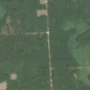
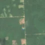

1,3 ha · Mătăsaru
văzută schimbată prima dată pe 10 iun. 2026


Autorizația cea mai apropiată nu acoperă tăierea: schimbarea cade în afara parcelei autorizate.
APV 2600111901870 · Ocolul Silvic Găești, la 66 m
Ce se vede în poze: În poza detaliată și în «înainte», zona marcată este acoperită de pădure deasă, iar în «după» apare un pătrat de teren dezgolit, roz-brun, cu margini drepte, în mijlocul pădurii care rămâne verde. Asta arată că arborii au fost tăiați pe toată suprafața, adică o tăiere rasă.